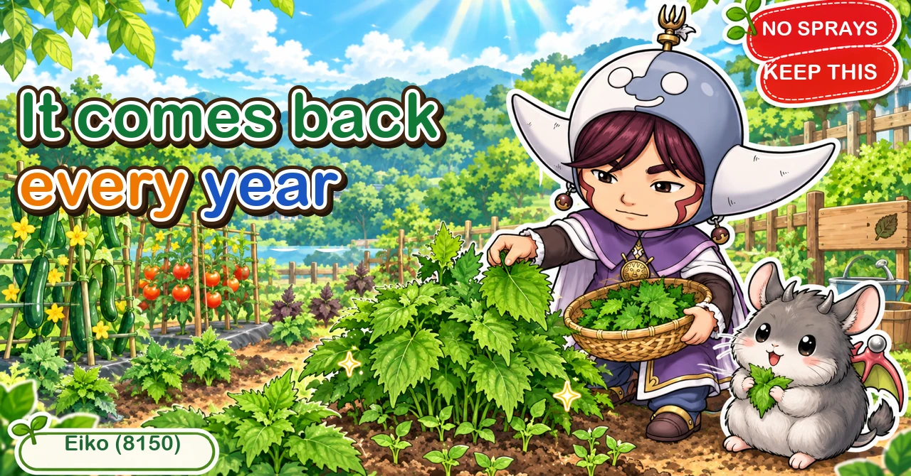
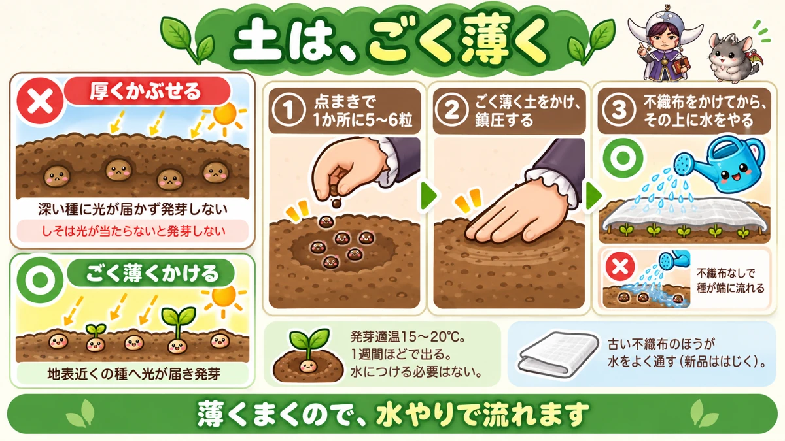
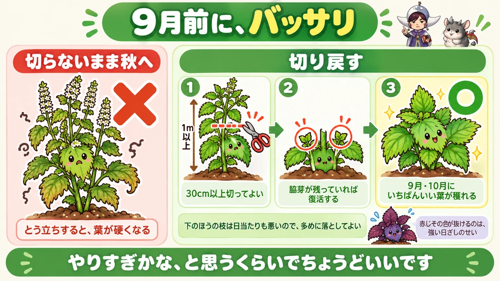
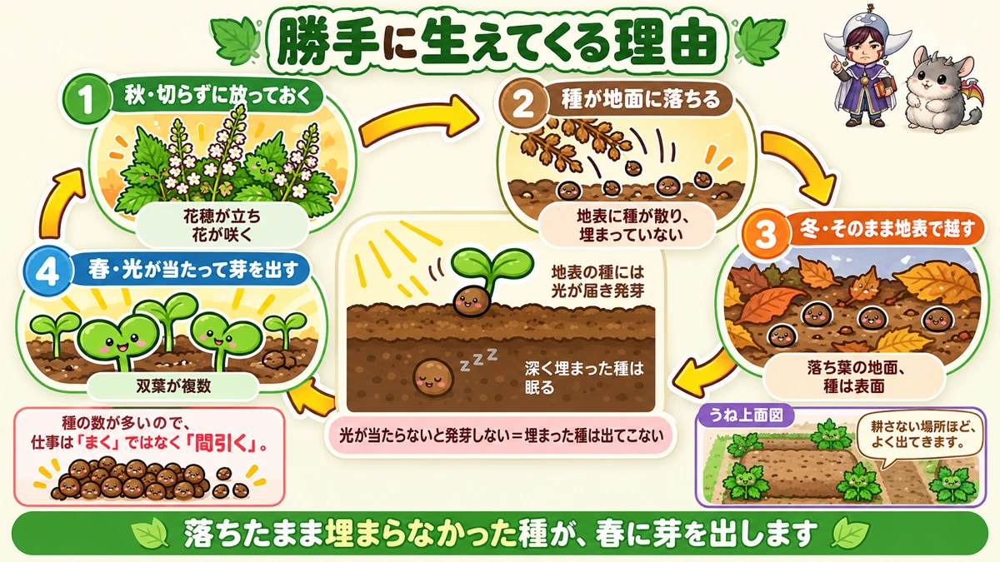

Shiso comes back from fallen seed every year 🌿 You buy one packet, once

🌿 "I sowed it and almost nothing came up."
🌿 "By autumn the leaves are too tough to eat."
🌿 "I keep buying ten leaves at a time."
Hello, I'm Eiko. Eight years of growing vegetables organically and without pesticides, and a teaching licence in science.
Shiso is the best value of anything in a kitchen garden. Bought, it's a small bundle for a surprising price. Grown, you pick as much as you want all summer.
The point, up front:
Shiso seed will not germinate without light.
So burying it fails. And seed that falls on the ground comes up by itself the next year 🌿
The basics
- Family: the mint family (a relative of basil and mint — fairly tolerant of being grown in the same place repeatedly)
- Sow: mid to late spring
- Harvest: midsummer through autumn
It barely needs feeding
Shiso grows in poor soil. A litre of well-rotted manure per square metre and a little poultry manure at the start, and then nothing for several years.
And adding more makes it worse: too much feed produces a harsh taste, and it brings pests — soft lush leaves are a feast, as with any leaf crop.
"It's growing badly so I'll feed it" is the wrong instinct here.
Bury it and it won't come up

What this diagram says （図解の文字）
- Cover it very thinly
- × covered thickly — no light reaches the deep seed and it doesn't germinate
- Shiso won't germinate without light
- ○ covered very thinly — light reaches the seed near the surface and it germinates
- 1 station sow, 5–6 seeds per station ／ 2 cover very thinly and firm ／ 3 lay fleece and water over the top
Shiso is a light-requiring seed. So cover it with the barest film of soil.
Which creates a problem
A thin covering means watering washes the seed away. My first attempt ended with every seed collected along one edge of the bed 😅
Fleece first, then water
The fix: sow, firm, lay fleece over the top, and water through the fleece.
The water arrives softly and nothing moves.
Sowing guide
- Station sow, 5–6 seeds per station
- 15–20 °C for germination
- About a week if it doesn't turn cold
- No need to soak the seed — the coat isn't hard
Use the leftovers as micro-leaves
A packet contains far more than you'll sow, and there is always some left. Scatter the surplus in a container and eat the seedlings — the seed leaves are a garnish in their own right, and the thinnings from the main sowing are the same thing. Nothing is wasted.
Cut it hard before autumn

What this diagram says （図解の文字）
- Cut it hard before autumn
- × taken into autumn uncut — it bolts and the leaves go tough
- 1 over a metre → you may cut more than 30 cm off
- 2 it recovers as long as side shoots remain
- 3 ○ the best leaves of the year come in autumn
- The lower branches are shaded anyway, so take more of them
What the heat does to it
After a hot summer, shiso has crisped leaves, small new growth, thin flavour and weak scent.
Go into autumn like that and it flowers almost immediately, after which the leaves are too tough to eat.
So cut it back
Same idea as renewal pruning an aubergine: shorten the branches and let the side shoots start again.
Cut more than you think. A branch over a metre long can lose 30 cm or more. The lower branches are shaded anyway, so take plenty of those.
"That might have been too much" is about right. As long as side shoots remain, it always comes back.
Two weeks to soft leaves
New branches come from the side shoots, and the leaves on them are fresh and the scent has returned. The best leaves of the year arrive in autumn.
And the leaves you cut off are still edible. Whatever you can't eat, lay on the bed — it reduces drying and returns to the soil.
Dot it around the edges of beds
The strong scent is disliked by insects, so shiso earns its place next to other crops. Put it at the corners and edges of beds of cucurbits or nightshades.
But don't overplant it — one plant gets large. One every two metres, at corners and edges, is plenty. In the middle of a bed it becomes an obstruction.
And it isn't universal: the night-feeding caterpillars eat shiso too. Holes appearing overnight? Scrape the soil at the base and you'll find one curled up.
The science: why it self-seeds 🔬

What this diagram says （図解の文字）
- Why it comes up on its own
- 1 autumn: left uncut, it throws flower spikes and flowers
- 2 the seed falls to the ground — scattered on the surface, not buried
- 3 winter: it stays there on the surface
- 4 spring: light reaches it and it germinates
Anyone who has grown shiso knows this: the next spring it appears without being sown, in roughly the same place as last year.
The mechanism
Left uncut in autumn, shiso flowers and sets seed, and that seed falls straight onto the ground.
Now recall the first half of this article: shiso seed needs light. Therefore:
- seed lying on the surface, unburied → light reaches it in spring → it germinates
- seed dug in deeply → never appears
"It comes up on its own" is a direct consequence of needing light.
So it appears where you don't dig
Which is why the edges of beds and the sides of paths — the places you cultivate least — are where shiso reappears. In my garden it comes up in the same corner every year; I haven't sown it myself in a long time.
And there's too much of it
One flower spike drops an enormous number of seeds. Left alone it germinates in a dense mat and takes space from other crops.
So the job stops being sowing and becomes thinning. A luxurious complaint, and a real one ☺️
To sum up
- ✅ Mint family; fairly tolerant of repeat planting
- ✅ It needs almost no feeding; too much brings harshness and pests
- ✅ It needs light, so cover it with almost nothing
- ✅ Lay fleece and water through it so the seed doesn't wash away
- ✅ Old fleece passes water better than new
- ✅ 5–6 seeds per station; about a week at 15–20 °C
- ✅ Scatter leftover seed for micro-leaves
- ✅ Cut it back hard before autumn, 30 cm or more
- ✅ It recovers as long as side shoots remain, and autumn gives the best leaves
- ✅ Red shiso going green is sun, not damage
- ✅ Dot it at bed corners, one every two metres
- ✅ Caterpillars eat shiso too
- ✅ Self-seeding happens because the seed needs light and stays on the surface
- ✅ The work becomes thinning, not sowing
You don't have to do all of it. Take whatever plant you have and cut it in half. In a fortnight you'll have what looks like a different vegetable 🌿
Thank you for reading!